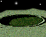

A game for 2 players.
- The object of this game is to be the first one to reach the rocket.
- You can be Lucy or Bob Kitty, but Lucy always gets to go first since this is her game.
- To move, click on the . That will spin the spinner.
Then, click on the to move your piece.
- When you're done with your turn, the green circle will turn into a stop sign and your animal will sit down. When your animal stands up again, then it is your turn.
- If the spinner lands on a then you jump to the space directly above where you were. If the spinner lands on a  then you drop down to the space directly below where you were.
Ready...Set...GO!